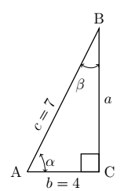
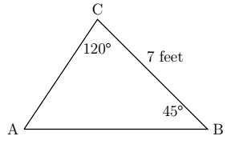
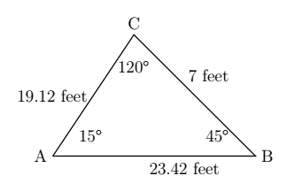
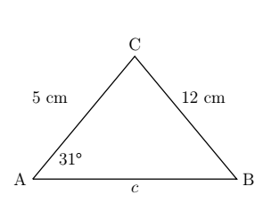
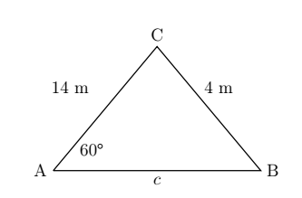
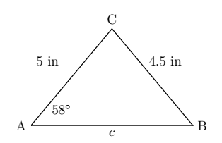

CH 6.4 – Law of Sines
Trigonometry literally means "measuring triangles" and with the earlier chapters under our belts, we are more than prepared to do just that. The main goal of this section and the next is to develop theorems which allow us to "solve" triangles — that is, find the length of each side of a triangle and the measure of each of its angles. In previous sections, we've had some experience solving right triangles. The following example reviews what we know.
Example
Given a right triangle with a hypotenuse of length \(7\) units and one leg of length \(4\) units, find the length of the remaining side and the measures of the remaining angles. Express the angles in decimal degrees, rounded to the nearest hundredth of a degree.
Solution
For definitiveness, we label the triangle below.

To find the length of the missing side \(a\), we use the Pythagorean Theorem to get \(a^2 + 4^2 = 7^2\) which then yields \(a = \sqrt{33}\) units. Now that all three sides of the triangle are known, there are several ways we can find \(\alpha\) using the inverse trigonometric functions. To decrease the chances of propagating error, however, we stick to using the data given to us in the problem. In this case, the lengths \(4\) and \(7\) were given, so we want to relate these to \(\alpha\). Remember, \(\cos(\alpha) = \frac{4}{7}\). Since \(\alpha\) is an acute angle, \(\alpha = \arccos\left(\frac{4}{7}\right)\) radians. Converting to degrees, we find \(\alpha \approx 55.15^{\circ}\). Now that we have the measure of angle \(\alpha\), we could find the measure of angle \(\beta\) using the fact that \(\alpha\) and \(\beta\) are complements so \(\alpha + \beta = 90^{\circ}\). Once again, we opt to use the data given to us in the problem. We have that \(\sin(\beta) = \frac{4}{7}\) so \(\beta = \arcsin\left(\frac{4}{7}\right)\) radians and we have \(\beta \approx 34.85^{\circ}\).
A few remarks about the example above are in order. First, we adhere to the convention that a lower case Greek letter denotes an angle and the corresponding lowercase English letter represents the side opposite that angle. Thus, \(a\) is the side opposite \(\alpha\), \(b\) is the side opposite \(\beta\) and \(c\) is the side opposite \(\gamma\). Taken together, the pairs \((\alpha, a)\), \((\beta, b)\) and \((\gamma, c)\) are called angle-side opposite pairs. Second, as mentioned earlier, we will strive to solve for quantities using the original data given in the problem whenever possible. While this is not always the easiest or fastest way to proceed, it minimizes the chances of propagated error. Third, since many of the applications which require solving triangles "in the wild" rely on degree measure, we shall adopt this convention for the time being. The Pythagorean Theorem along with our other theorems, formulas and identities allow us to easily handle any given right triangle problem, but what if the triangle isn't a right triangle? In certain cases, we can use the Law of Sines to help.
Law of Sines
Given a triangle with angle-side opposite pairs \((\alpha, a)\), \((\beta, b)\), and \((\gamma, c)\), the following ratios hold:
\[ \frac{\sin(\alpha)}{a} = \frac{\sin(\beta)}{b} = \frac{\sin(\gamma)}{c} \]or, equivalently,
\[ \frac{a}{\sin(\alpha)} = \frac{b}{\sin(\beta)} = \frac{c}{\sin(\gamma)} \]Example
Solve the triangle using the Law of Sines. Round all answers to two decimal places.
\(C = 120^{\circ}\), \(B = 45^{\circ}\), and \(c = 7\) feet.
Solution
Very similar to previous chapters and sections, to solve this triangle we should first draw a picture.

With the Law of Sines we need angles that correspond to sides, so since we have side \(a\) that means we'd need angle \(A\). Now, while we don't have that angle we can find it, since the sum of the interior angles of a triangle are equal to \(180^{\circ}\), thus:
\[ \angle A = 180^{\circ} - 120^{\circ} - 45^{\circ} = 15^{\circ} \]This allows us to now set up and solve one of our proportions:
\[ \begin{array}{rcl} \dfrac{\sin(15^{\circ})}{7} & = & \dfrac{\sin(120^{\circ})}{c} \\[10pt] 7\sin(120^{\circ}) & = & c\sin(15^{\circ}) \\[10pt] \dfrac{7\sin(120^{\circ})}{\sin(15^{\circ})} & = & c \\[10pt] 23.42 \text{ feet} & \approx & c \end{array} \]Now we can find the last missing side by once again applying the Law of Sines. It is important to make note that you cannot use the Pythagorean Theorem here. Remember that is only for right triangles, and this is an obtuse triangle.
\[ \begin{array}{rcl} \dfrac{\sin(15^{\circ})}{7} & = & \dfrac{\sin(45^{\circ})}{b} \\[10pt] 7\sin(45^{\circ}) & = & b\sin(15^{\circ}) \\[10pt] \dfrac{7\sin(45^{\circ})}{\sin(15^{\circ})} & = & b \\[10pt] 19.12 \text{ feet} & \approx & b \end{array} \]If you put it all together our triangle would look like:

The Ambiguous Case (SSA)
The above example is an example of how to use the Law of Sines when you have Angle-Side-Angle (ASA) or Angle-Angle-Side (AAS). However, not all triangles will be ASA or AAS. Some may be Side-Side-Angle (SSA). This type of case we have to approach with caution. We have to remember that the sine function is positive in both Quadrant I and Quadrant II. That means that when finding an angle using the Law of Sines, the angle could be \(30^{\circ}\) or it could be \(120^{\circ}\). When we don't know what the triangle looks like, we have to proceed with caution. This is why we call SSA the ambiguous case. There are three cases that this approach will fall under:
- One Solution
- Two Solutions
- No Solution
The Ambiguous Case (SSA)
![A composite diagram showing all six sub-cases of the SSA ambiguous case, divided into two groups. The top group is labeled 'When angle A is Acute' and contains four sub-cases arranged left to right: (1) Angle A is at the left with side b extending up and to the right; side a is shorter than the height h so it does not reach the base line — labeled 'If a is less than h, no solution.' (2) Side a equals the height h exactly, forming one right triangle — labeled 'If a equals h, one solution.' (3) Side a is greater than or equal to side b, so the arc from the tip of b crosses the base line once — labeled 'If a is greater than or equal to b, one solution.' (4) Side a is strictly between h and b, so the arc crosses the base line in two places forming two distinct triangles — labeled 'If h is less than a is less than b, two solutions.' The bottom group is labeled 'When angle A is Obtuse' and contains two sub-cases: (5) Angle A is obtuse with side b extending up and to the left; side a is less than or equal to b so no valid triangle forms — labeled 'If a is less than or equal to b, no solution.' (6) Side a is greater than b, so the arc from the tip of b crosses the opposite side once — labeled 'If a is greater than b, one solution.'](images/6_4_4.png)
As you can see there are a number of different things that can happen with the ambiguous case. Let's look at some examples to see how we can determine which circumstance it is.
Example
Solve each of the triangles given below. Round to two decimal places when applicable.
- \(A = 31^{\circ}\), \(a = 12\) cm, and \(b = 5\) cm
- \(A = 60^{\circ}\), \(a = 4\) m, and \(b = 14\) m
- \(A = 58^{\circ}\), \(a = 4.5\) in, and \(b = 5\) in
Solution
1. As with all problems, begin with drawing the anticipated triangle.

Looking at the picture it is important to note that \(a > b\) and \(\angle A\) is acute, which means that we should have only one solution to this triangle. The first piece you can find is \(\angle B\), since that is the angle that corresponds to the other given side. Remember that you cannot use the Pythagorean Theorem once again, because it is not a right triangle. Or at this point we don't know if it is a right triangle.
\[ \begin{array}{rcl} \dfrac{\sin(31^{\circ})}{12} & = & \dfrac{\sin(B)}{5} \\[10pt] 5\sin(31^{\circ}) & = & 12\sin(B) \\[10pt] \dfrac{5\sin(31^{\circ})}{12} & = & \sin(B) \\[10pt] \arcsin\!\left(\dfrac{5\sin(31^{\circ})}{12}\right) & = & B \\[10pt] 12.39^{\circ} & \approx & B \end{array} \]Using our newfound information we can find \(\angle C = 180^{\circ} - 31^{\circ} - 12.39^{\circ} = 136.61^{\circ}\). Now to find the last side we can set up a proportion again and solve for \(c\).
\[ \begin{array}{rcl} \dfrac{\sin(31^{\circ})}{12} & = & \dfrac{\sin(136.61^{\circ})}{c} \\[10pt] c\sin(31^{\circ}) & = & 12\sin(136.61^{\circ}) \\[10pt] c & = & \dfrac{12\sin(136.61^{\circ})}{\sin(31^{\circ})} \\[10pt] c & \approx & 16.01 \text{ cm} \end{array} \]2. Once again start by drawing the triangle. Remember you don't actually know what the triangle looks like; this drawing is simply to help you get a picture or visual of it.

Note how in this triangle \(a < b\) which means that we could have two solutions or no solutions. The only way to find out is to set up our proportion.
\[ \begin{array}{rcl} \dfrac{\sin(60^{\circ})}{4} & = & \dfrac{\sin(B)}{14} \\[10pt] 14\sin(60^{\circ}) & = & 4\sin(B) \\[10pt] \dfrac{14\sin(60^{\circ})}{4} & = & \sin(B) \\[10pt] 3.03 & \approx & \sin(B) \end{array} \]With this example notice how \(\sin(B) = 3.03\). By this point in the course you should know that that isn't possible, since the value of sine is always between \(\pm 1\). This tells us that this triangle has no solution. Meaning it would be impossible to build a triangle with those given dimensions.
3. Looking at \(a < b\) just ever so slightly in this case, we once again know that it could be no solution or two solutions. Obviously we just did a no solution example, so this must be the two solution example. So, let's begin like we've done each of the last few, with a picture. Then work through your proportion.

Now, as we previously discussed, this is the two solution example so this is our first angle for \(B\). To find the next one: \(180^{\circ} - 70.44^{\circ} = 109.56^{\circ}\). So now we have to break this up into two possible solutions — one for \(B_1 = 70.44^{\circ}\) and one for \(B_2 = 109.56^{\circ}\).
Case I: \(B_1\)
\(C = 180^{\circ} - 70.44^{\circ} - 58^{\circ} = 51.56^{\circ}\)
\[ \begin{array}{rcl} \dfrac{\sin(58^{\circ})}{4.5} & = & \dfrac{\sin(51.56^{\circ})}{c} \\[10pt] c\sin(58^{\circ}) & = & 4.5\sin(51.56^{\circ}) \\[10pt] c & = & \dfrac{4.5\sin(51.56^{\circ})}{\sin(58^{\circ})} \\[10pt] c & \approx & 4.16 \text{ in} \end{array} \]Case II: \(B_2\)
\(C = 180^{\circ} - 109.56^{\circ} - 58^{\circ} = 12.44^{\circ}\)
\[ \begin{array}{rcl} \dfrac{\sin(58^{\circ})}{4.5} & = & \dfrac{\sin(12.44^{\circ})}{c} \\[10pt] c\sin(58^{\circ}) & = & 4.5\sin(12.44^{\circ}) \\[10pt] c & = & \dfrac{4.5\sin(12.44^{\circ})}{\sin(58^{\circ})} \\[10pt] c & \approx & 1.14 \text{ in} \end{array} \]One last comment before we use the Law of Sines to solve an application problem. In the Angle-Side-Side case, if you are given an obtuse angle to begin with then it is impossible to have the two triangle case.
Application: Law of Sines
Example
Sasquatch Island lies off the coast of Ippizuti Lake. Two sightings, taken 5 miles apart, are made to the island. The angle between the shore and the island at the first observation point is \(30^{\circ}\) and at the second point the angle is \(45^{\circ}\). Assuming a straight coastline, find the distance from the second observation point to the island. What point on the shore is closest to the island? How far is the island from this point?
Solution
We sketch the problem below with the first observation point labeled as \(P\) and the second as \(Q\). In order to use the Law of Sines to find the distance \(d\) from \(Q\) to the island, we first need to find the measure of \(\beta\) which is the angle opposite the side of length 5 miles. To that end, we note that the angles \(\gamma\) and \(45^{\circ}\) are supplemental, so that \(\gamma = 180^{\circ} - 45^{\circ} = 135^{\circ}\). We can now find \(\beta = 180^{\circ} - 30^{\circ} - \gamma = 180^{\circ} - 30^{\circ} - 135^{\circ} = 15^{\circ}\). By the Law of Sines, we have:
\[ \frac{d}{\sin(30^{\circ})} = \frac{5}{\sin(15^{\circ})} \]which gives \(d = \dfrac{5\sin(30^{\circ})}{\sin(15^{\circ})} \approx 9.66\) miles.
![Diagram of Sasquatch Island problem. A horizontal coastline runs across the bottom. Point P is on the left of the coast and point Q is to its right, 5 miles away. Sasquatch Island is above and to the right. A line from P to the island makes a 30-degree angle with the coast. A line from Q to the island makes a 45-degree angle with the coast. The angle at the island labeled beta and the supplementary angle labeled gamma are shown. The distance d from Q to the island is approximately 9.66 miles. A dashed perpendicular line drops from the island to point C on the coast, with horizontal distance x from Q to C and vertical distance y from C to the island.](images/6_4_8.png)
Next, to find the point on the coast closest to the island, which we've labeled as \(C\), we need to find the perpendicular distance from the island to the coast. Let \(x\) denote the distance from the second observation point \(Q\) to the point \(C\) and let \(y\) denote the distance from \(C\) to the island. We get \(\sin(45^{\circ}) = \dfrac{y}{d}\). After some rearranging, we find:
\[ y = d\sin(45^{\circ}) \approx 9.66\left(\frac{\sqrt{2}}{2}\right) \approx 6.83 \text{ miles} \]Hence, the island is approximately \(6.83\) miles from the coast. To find the distance from \(Q\) to \(C\), we note that \(\beta = 180^{\circ} - 90^{\circ} - 45^{\circ} = 45^{\circ}\) so by symmetry, we get \(x = y \approx 6.83\) miles. Hence, the point on the shore closest to the island is approximately \(6.83\) miles down the coast from the second observation point.
Area of a Triangle Using the Law of Sines
As young students you probably learned to find the area of a triangle using the formula \(A = \frac{1}{2}bh\). But this formula only works if you have a right triangle, and as we know this whole chapter is on trigonometry for non-right triangles. Which leads us to this new area formula.
Area of a Triangle
Suppose \((\alpha, a)\), \((\beta, b)\) and \((\gamma, c)\) are the angle-side opposite pairs of a triangle. Then the area \(A\) enclosed by the triangle is given by:
\[ A = \frac{1}{2}bc\sin(\alpha) = \frac{1}{2}ac\sin(\beta) = \frac{1}{2}ab\sin(\gamma) \]Example
Find the area of the triangle where \(\alpha = 120^{\circ}\), \(a = 7\) units and \(\beta = 45^{\circ}\).
Solution
Using a little bit of work we could have all three angles and all three sides to work with. However, to minimize propagated error, we choose \(A = \frac{1}{2}ac\sin(\beta)\). We are given \(a = 7\) and \(\beta = 45^{\circ}\), and we can calculate:
\[ c = \frac{7\sin(15^{\circ})}{\sin(120^{\circ})} \]Using these values, we find:
\[ A = \frac{1}{2}(7)\left(\frac{7\sin(15^{\circ})}{\sin(120^{\circ})}\right)\sin(45^{\circ}) \approx 5.18 \text{ square units} \]Exercises
Exercises to be added at a later date.